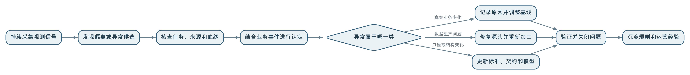

数据质量关注数据是否符合业务用途和质量要求；数据可观测性通过持续采集数据、任务、元数据和血缘等运行信号，帮助组织发现数据正在发生什么变化、异常从哪里产生、影响了哪些下游。
数据可观测性能够发现问题，但不能仅凭“偏离历史”就认定数据错误。数据波动可能是真实业务变化，也可能由数据缺失、重复、延迟、口径调整或处理故障造成。因此，更准确的关系是：
数据可观测性负责发现异常候选和提供诊断线索，数据质量治理负责结合业务要求认定问题、确定责任并推动处置闭环。
传统数据质量检查通常从已经明确的要求出发，例如：
这些规则很重要，但它们只能检查组织已经想到并表达出来的问题。
实际运行中还会出现另一类异常：
如果事先没有针对这些情况编写规则，固定质量检查可能全部通过。
数据可观测性要解决的，正是持续生产环境中的发现和诊断问题：当数据规模、结构、内容、时间特征或上下游关系发生异常变化时，尽快让组织知道，并提供足够线索判断发生了什么。
“可观测性”一词最初用于描述能否根据系统外部表现推断其内部状态，后来广泛应用于软件和分布式系统运行管理。
数据可观测性将这一思路用于数据生产和使用过程：通过持续采集和分析数据本身、处理任务、元数据、血缘和消费情况等信号，了解数据是否按预期产生、流动、加工和交付。
它通常需要回答五类问题：
因此，数据可观测性不只是展示几张监控图，也不只是判断任务成功或失败。它应当把“数据发生变化”与“上下游影响和可能原因”联系起来。
两者密切相关，但观察角度不同。
| 对比维度 | 数据质量 | 数据可观测性 |
|---|---|---|
| 核心问题 | 数据是否适合具体业务用途 | 数据正在发生什么，异常在哪里、为什么发生、影响了谁 |
| 主要依据 | 业务定义、数据标准、质量规则和风险要求 | 运行信号、历史基线、变化趋势、任务状态、元数据和血缘 |
| 擅长发现 | 已经定义的完整性、准确性、一致性、有效性等问题 | 延迟、数据量突变、分布漂移、结构变化和未知异常 |
| 判断方式 | 与明确要求或规则比较 | 与预期状态、历史模式和相关数据比较 |
| 主要结果 | 合格与否、问题记录、质量等级和整改要求 | 异常候选、告警、影响范围和根因线索 |
| 责任重点 | 业务认定、源头整改和质量运营 | 持续监测、异常发现、诊断和影响分析 |
| 是否能够单独判定业务事实 | 需要业务规则和责任人参与 | 通常不能，仅凭统计偏离不能认定事实错误 |
可以用一句话概括：
数据质量回答“是否符合要求”，数据可观测性回答“现在发生了什么”。数据质量是一项面向业务可信使用的治理目标和管理活动。数据可观测性更偏向持续运行中的技术和运营能力，它既能服务数据质量，也能服务数据管道可靠性、数据服务等级管理和故障定位。
二者不应被建设成彼此隔离的两套体系。可观测性发现的异常需要进入质量闭环；质量治理中反复发生的问题，也应沉淀为新的观测指标、质量规则或数据契约。
业界经常将数据可观测信号归纳为鲜活度、数据量、结构、分布和血缘等方面。这是一种便于理解的总结，不是所有项目都必须机械采用的固定标准。
观察数据是否按照约定时间更新，延迟是否超过业务能够接受的范围。
例如，经营日报要求每天8时前完成，如果数据在11时才到达，即使内容最终正确，也无法支持晨会决策。
观察记录数、文件数、分区数、空间要素数或消息数量是否出现异常变化。
数据量下降可能意味着部分来源中断，数据量异常上涨可能意味着重复采集、重复消费或业务真实增长。
观察表、字段、类型、精度、约束和嵌套结构是否发生变化。
结构变化本身不一定错误，但如果没有同步通知下游，就可能导致任务失败、字段错位或指标含义改变。
观察空值率、唯一值数量、最大值、最小值、分位数、类别占比和空间覆盖等统计特征。
某字段没有违反格式规则，不代表其分布一定合理。例如，道路平均速度全部落在合法范围内，但原本分散的取值突然集中在同一个数值，就值得进一步检查。
观察任务是否成功、耗时是否异常、处理了多少数据、是否发生重试、跳过或部分完成。
“任务成功”只能说明程序没有报错，不能证明处理的数据完整，也不能证明结果符合业务要求。
观察数据来自哪里，经过哪些任务和模型，最终被哪些指标、报表、算法和服务使用。
血缘让告警从“某张表有异常”进一步变为“哪些业务结果可能不可信”，也帮助从多个下游异常反向寻找共同上游。
观察数据是否被查询、下载或调用，服务是否超时，关键消费者是否仍在使用旧版本。
同一个异常发生在无人使用的临时数据集和核心经营指标上，处置优先级显然不同。
不等于。数据加工流水线可视化是数据可观测性的一个重要入口和展示载体，但仅仅画出流程、节点和运行状态，还不能说明数据是否健康。
数据加工流水线通常以有向图、任务编排图或节点列表展示：
它主要回答：
数据加工流程是怎样组织和运行的？
这些信息是判断异常的重要线索。技术人员可以通过流水线视图快速找到失败节点、长时间运行任务和异常依赖关系。
任务状态通常反映程序是否按照技术逻辑结束，并不等于数据已经完整、准确和适合业务使用。
例如，上游接口只返回了20%的数据，但接口正常响应，后续采集、转换和指标计算任务也都没有报错。流水线中的所有节点可能显示为绿色，最终结果却因为数据覆盖不足而失真。
因此，数据可观测性还要在任务状态之外观察：
反过来，某个任务执行失败，也不一定意味着当前业务数据完全不可用。如果平台仍保留上一批经过验证的数据，业务可能只是面对鲜活度下降。是否暂停服务，要结合数据时效要求和使用风险判断，而不能只看节点是红色还是绿色。
流水线依赖关系主要描述任务按什么顺序执行，数据血缘则描述数据从哪些来源经过哪些转换形成，并被哪些指标、报表、模型和服务使用。
两者可能部分重合，但流水线视图通常不能完整表达：
没有血缘和消费关系，流水线可视化可以帮助定位“哪个任务失败”，却未必能够说明“哪些业务结果可能不可信”。
比较理想的做法，是把可观测信息叠加到流水线和血缘视图中。节点除了显示成功或失败，还可以展示：
此时，流水线图不再只是一个任务编排界面，而成为查看信号、定位异常和追踪处置过程的操作入口。
可以用一句话概括两者的边界：
流水线可视化让加工过程“看得见”，数据可观测性还要让数据健康状态、异常原因和业务影响“说得清”。
不一定。数据波动只是一个需要解释的现象，不能直接等同于数据错误。
节假日、营销活动、极端天气、政策变化和突发事件，都可能使数据偏离历史规律。
这种情况下，数据忠实反映了业务变化，不属于质量问题。系统应保留数据，并记录相关业务事件，避免将真实变化误判为错误。
数据缺失、重复上报、接口中断、部分分区未处理、任务延迟和转换逻辑错误，也会造成数据波动。
这种波动通常属于质量或数据生产可靠性问题，需要定位源头、修复流程、重新加工并验证结果。
上游增加业务状态、调整分类、改变采集范围或修改统计口径后，数据分布会发生变化。
数据本身可能正确，但如果标准、数据契约、模型和下游指标没有同步更新，仍会造成业务理解和使用问题。
三类波动的处理方式如下：
| 波动类型 | 是否属于质量问题 | 主要处理方式 |
|---|---|---|
| 真实业务波动 | 通常不是 | 保留事实，补充业务事件说明，必要时调整后续基线 |
| 数据生产异常 | 通常是 | 定位源头、修复任务或数据、重新加工并验证 |
| 业务定义或口径变化 | 不一定 | 确认变更，更新标准、契约、模型、指标和观测基线 |
这里需要坚持两个判断：
异常不等于错误，偏离历史不等于违反业务规则。
另一方面，也不能因为某种波动“业务上可能发生”，就不再检查。可观测性应当提供证据和上下文，再由技术人员与业务责任人共同完成认定。
数据质量规则擅长发现已知问题。
例如，组织已经明确规定：
这些要求可以直接转化为规则或数据契约。
数据可观测性更擅长发现尚未被明确写成规则的变化，例如：
发现未知异常以后，需要进一步判断：
可观测性和质量规则由此形成互补：规则让已知问题可重复检查，可观测性帮助组织不断认识新的问题。
数据可观测性不能停留在发现和告警。异常需要进入一条能够落实责任的处理路径。

排除监测程序故障、统计窗口错误、重复告警和临时资源抖动，确认变化发生在哪个数据范围和时间段。
查看接口、任务、分区、日志、代码版本和资源使用情况，判断是否存在采集、传输、加工或发布故障。
核对节假日、活动、政策、组织调整和业务规则变化。技术指标只能描述变化，不能替代业务事实判断。
根据血缘和消费关系识别受影响的指标、报表、模型、服务和业务流程，并确定问题优先级。
根据影响程度选择继续运行、标记风险、隔离数据、暂停发布、回退版本或阻断流水线。
优先修复源头或生产逻辑。需要重新加工时，应保留原始数据、修复依据、版本和审计记录，而不是为了让结果看起来正常而直接覆盖原始事实。
把确认过的问题转化为质量规则、观测指标、数据契约、变更流程或业务事件标注，减少同类问题再次发生。
不能一概而论。自动阻断需要比自动告警更高的确定性，因为阻断本身也可能影响业务连续性。
可以将异常分为提示、警告、严重和阻断等等级，并综合考虑：
比较稳妥的原则是：
明确违反强约束的问题可以阻断，尚待解释的统计波动先告警；核心结果无法保证可信时暂停发布，而不是盲目停止所有上游生产。
某城市持续汇聚道路速度、车辆通行、路口流量和设备状态数据，并计算区域拥堵指数、道路平均速度和高峰持续时间。
某天早高峰，拥堵指数明显低于平时，系统显示道路运行异常顺畅。
数据中的设备编号、道路编号和时间格式都正确，速度也在允许范围内；汇聚任务状态显示成功。
如果只检查字段格式、空值和任务成败，系统可能认为数据合格。
持续监测发现：
这些信号只能证明数据出现异常变化，还不能直接说明道路并未真正变得通畅。
血缘显示拥堵指数依赖道路速度明细。进一步检查发现，上游采集接口只返回了部分设备的数据，但任务没有报错，因此流水线成功生成了一个不完整的结果。
这不是正常业务波动，而是数据完整性和鲜活度问题。
平台识别出受影响的拥堵指数、交通运行大屏和早高峰分析报告，于是：
问题解决以后，可以增加：
这样，一次未知异常就转化为后续可重复执行的质量规则、观测指标和发布控制。
数据可观测性不是必须单独采购的一套平台。组织可以在现有数据治理和数据开发体系上逐步建立能力。
通常需要整合：
可以按照以下顺序逐步建设：
不要一开始监测所有表和字段。先选择核心指标、报表、模型和数据服务，明确它们依赖的数据集和交付要求。
更新是否及时、数据是否到齐，往往是最容易产生直接业务影响的问题，也比较容易建立清晰的监测基线。
在数据稳定运行后，逐步监测取值分布、类别占比、空间覆盖和跨数据集一致性。
如果只有告警而没有血缘，技术人员仍需人工寻找影响范围和根因，可观测性的价值会明显降低。
异常告警、质量问题、责任认定和整改验证应进入统一流程，避免分别维护两套问题清单。
不能只统计建立了多少监控指标或发送了多少告警。更有意义的指标包括：
数据可观测性的业务价值不在于让监控页面更丰富，而在于更早发现问题、更快定位影响、减少错误数据进入业务决策。
AI 和机器学习可以辅助：
但 AI 不能独立回答：
AI 可以提供异常候选和诊断线索，最终认定仍需要数据标准、业务语境、责任机制和人工确认。
数据质量关注是否符合业务要求，可观测性强调持续发现变化、诊断原因和分析影响。二者重叠，但不能等同。
任务可以在只处理部分数据、使用错误分区或收到异常来源数据的情况下成功结束。
真实业务变化也会造成大幅波动。历史基线只能帮助发现异常候选，不能替代业务判断。
大量重复和无效告警会使真正重要的问题被忽视。告警必须分级、去重并关联业务影响。
低置信度的统计异常直接阻断，可能造成比数据波动本身更严重的业务中断。
如果缺少任务状态、血缘、消费关系和变更记录，就很难判断异常原因和业务影响。
只有确认变化真实、稳定且业务定义已经同步后，才能调整基线。不能为了减少告警掩盖尚未解决的问题。
AI 可以识别统计异常，却不天然掌握真实业务事实、责任边界和风险容忍度。
技术人员负责采集信号和定位链路，业务人员仍需解释变化、确定影响和确认处理结果。
发现问题不等于解决问题。没有责任分派、修复验证和规则沉淀，可观测性只会增加一批无人处理的告警。
数据质量和数据可观测性不是两套相互竞争的概念。
数据质量定义什么样的数据可以被业务信任和使用；数据可观测性让组织能够持续看见数据生产过程中的变化，并在固定规则尚未覆盖时尽早发现异常。
面对数据波动，不能简单地把偏离历史判定为错误，也不能因为存在业务解释的可能性而忽略风险。合理的处理方式是先发现变化，再结合任务、数据、血缘和业务事件完成认定，最后根据影响程度选择记录、告警、隔离、阻断、修复或调整基线。
当异常能够被及时发现、影响能够被准确识别、原因能够被快速定位，并最终沉淀为规则和改进措施时，数据可观测性才真正成为数据质量闭环和业务可信用数的一部分。
← 上一问：036 主数据、参考数据和交易数据有什么区别，主数据的“黄金记录”如何形成？ · 返回目录 · 下一问：038 数据资源、数据资产和数据要素应如何区分？ →